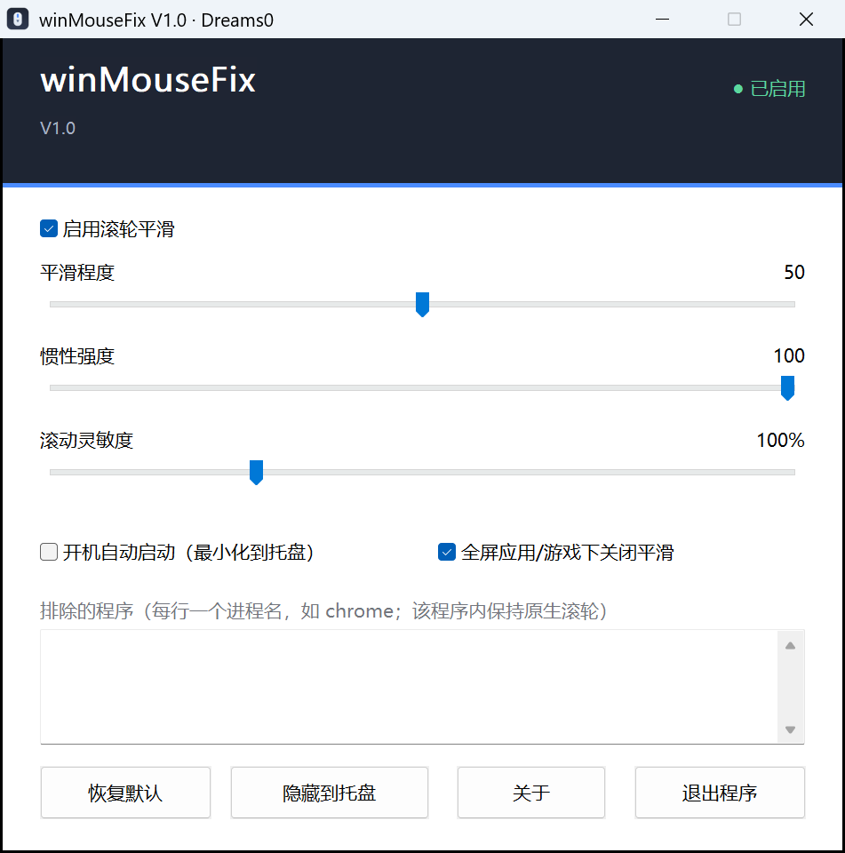

速度自适应
慢滚精准停住，快滑自然滑行。滚动速度决定惯性大小，手指想停，视野就停。
从速度模型到输出粒度，每一层都为自然滚动而设计。
慢滚精准停住，快滑自然滑行。滚动速度决定惯性大小，手指想停，视野就停。
连续快速滚动会逐步提速，最高 +400%；慢下来时立即回到精准的 1:1 滚动。
+400%Chromium / Electron 使用亚格细腻步长，传统程序使用整格输出，顺滑与兼容兼顾。
Shift + 滚轮或倾斜滚轮同样拥有平滑手感，横向浏览也保持自然。
Shift + Scroll“全屏应用/游戏下关闭平滑”让全屏游戏与视频保持系统原生滚动，随时切换。
原生滚动选项为特定程序保留原生滚轮手感。把习惯留给应用，把定制留给自己。
在演示窗口里滚动鼠标滚轮，或点击按钮让演示自动滚动。速度越快，距离与滑行越明显。
小提示：位移 = 基础距离 × 灵敏度 × 惯性增益 × 加速倍率。
离散的滚轮格，被重新编排成连续的滚动节奏。
WH_MOUSE_LL 全局钩子读取滚轮，依据窗口与进程选择最合适的输出粒度。
速度因子、惯性增益与三阶段加速，构成一条有呼吸感的滚动曲线。
4 ms 平滑调度 + SendInput 标记注入，把连续的滚动节奏送到每个应用。
三枚滑块，一个清爽面板。调整即时生效，设置自动保存。

实时生效 自动保存